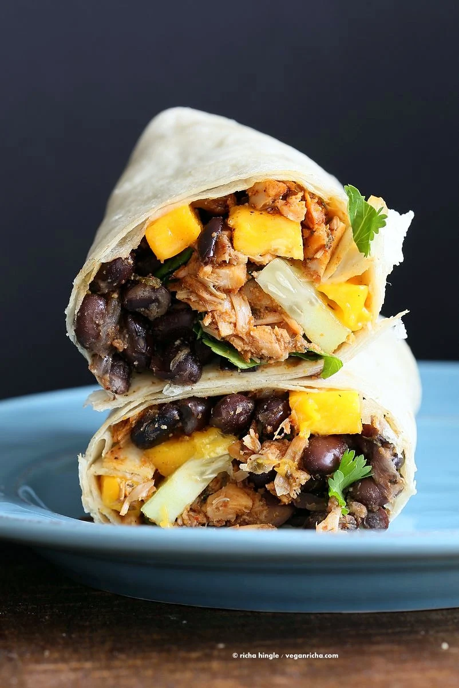

Home
Jerk Jackfruit and Mango

Description
A delicious and fresh taste.
Ingredients
Jerk Jackfruit
- 20 oz (566 g) can young green jack fruit
- 2 tsp oil divided
- 1.5 tsp garlic powder
- 1 tsp onion powder
- 1 tsp thyme
- 1 tsp parsley
- 1/2 tsp (0.5 tsp) salt
- 1 tsp paprika
- 1/2 to 3/4 tsp cayenne
- 1/4 to 1/2 tsp black pepper
- a good dash of cinnamon, nutmeg and all spice.
- 1 tsp or more lime juice
- 2 cups (500 ml) water
- 1/4 to 1/2 tsp sugar or other sweetener
Black Beans
- 1 tsp oil
- 1/2 cup (80 g) chopped onion
- 2 cloves of garlic finely chopped
- 1 15 oz (425 g) can black beans or 1.5 cups cooked
- 1/4 tsp (0.25 tsp) all spice
- 1/2 tsp (0.5 tsp) thyme
- 1/4 tsp (0.25 tsp) cayenne
- 1/2 tsp (0.5 tsp) salt or to taste, depends on the beans
- 1.5 tbsp orange juice or 2 tsp lemon juice + 1/4 tsp sugar
- 1/4 cup (62.5 ml) water
Other additions
- Chopped mango
- sliced cucumbers or pickles
- cilantro or baby greens
- salt pepper, lemon or lime juice
- large tortilla wraps
Steps
Jerk Jackfruit
- Drain the jackfruit and wash well. Squeeze out the liquid really well by pressing the jackfruit pieces in a paper napkin. Shred in a food processor or thinly slice using a knife. (For more flavor, toss the shredded jackfruit in the spices, herbs, lime juice and marinate in the fridge for an hour or overnight. then cook with water)
- Heat 1 tsp oil in a skillet over medium heat. Add shredded jackfruit and all dry spices (or 1.5 tbsp or more premade jamaican jerk seasoning) . Cook for 2-3 mins or until the spices start to smell roasted.
- Add lime juice and water and sugar and cook partially covered for 25 to 30 minutes. Stir occasionally.
- Once the mixture is dry, taste and adjust salt and heat. Add in the 1 tsp oil and continue to roast the jackfruit until golden brown on some edges. Serve this in wraps, sandwiches, tacos, nachos.
Black Beans
- Heat oil in a skillet over medium heat. Add onions and garlic and cook until translucent. 4-5 mins.
- Add black beans, spices, water and orange or lime juice and simmer for 10 mins. Stir occasionally.
Make the wraps
- Layer the black beans, then cilantro or chopped baby green, then a good helping of the jerk jackfruit, then cucumber and mango, lemon, salt and pepper. Fold into a burrito and serve.